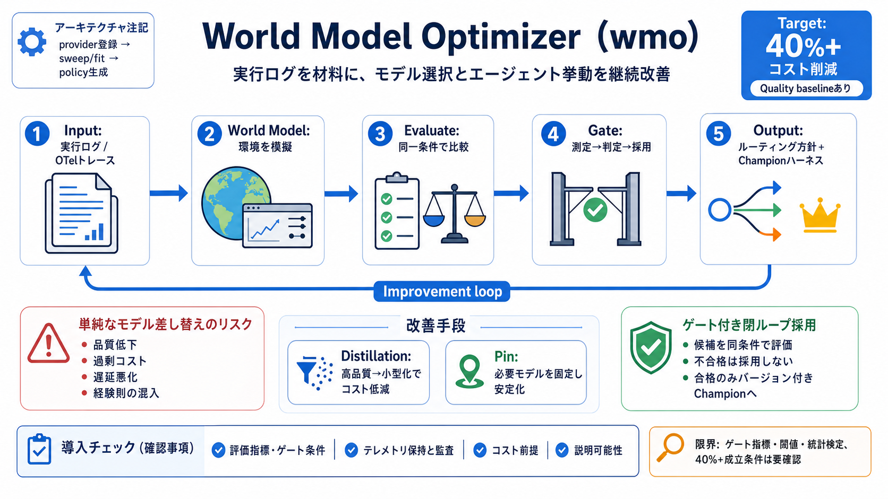

Model Routing in Agentic Systems: Cost Architecture
A lightweight routing classifier adds single-digit millisecond latency in most implementations. That cost is negligible …

A lightweight routing classifier adds single-digit millisecond latency in most implementations. That cost is negligible …
`high` and `xhigh` are supported; `xhigh` maps to max reasoning. It is well suited for applications such as coding assis…
`--aggregator`: The primary model used for final response generation. `--reference_models`: List of models used as refe…
each request to the fastest one, so you trade some model variety for lower latency. Read the Pareto Router docs for the …
by googleApr 3, 2026262K context$0.10/M input tokens$0.30/M output tokens - Z.ai: GLM 4.7 FlashGLM 4.7 Flash As a 30…